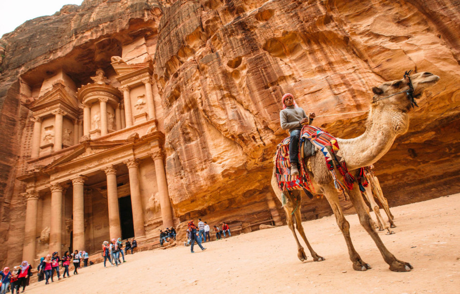

Copenhagen
Since the turn of the 21st century, Copenhagen has seen strong urban and cultural development,
facilitated by investment in its institutions and infrastructure. The city is the cultural,
economic and governmental centre of Denmark; it is one of the major financial centres of Northern Europe
with the Copenhagen Stock Exchange. Copenhagen's economy has seen rapid developments in the service sector,
especially through initiatives in information technology, pharmaceuticals and clean technology.
More info

Jerusalem
Jerusalem is situated on the southern spur of a plateau in the Judaean Mountains, which include the Mount of Olives
(East) and Mount Scopus (North East). The elevation of the Old City is approximately 760 m (2,490 ft).[306] The whole
of Jerusalem is surrounded by valleys and dry riverbeds (wadis). The Kidron, Hinnom, and Tyropoeon Valleys intersect
in an area just south of the Old City of Jerusalem.[307] The Kidron Valley runs to the east of the Old City and
separates the Mount of Olives from the city proper. Along the southern side of old Jerusalem is the Valley of Hinnom,
a steep ravine associated in biblical eschatology with the concept of Gehenna or Hell.[
More info

Petra
Petra (Arabic: ٱلْبَتْرَاء, romanized: Al-Batrāʾ; Ancient Greek: Πέτρα, "Stone"), originally known to its inhabitants as Raqmu,
is a historical and archaeological city in southern Jordan. Petra lies around Jabal Al-Madbah in a basin surrounded by
mountains which form the eastern flank of the Arabah valley that runs from the Dead Sea to the Gulf of Aqaba.The area
around Petra has been inhabited as early as 7,000 BC,[5] and the Nabataeans might have settled in what would become the
capital city of their kingdom, as early as the 4th century BC.
More info